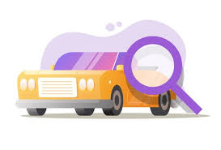

- Run your hands flat along the top of the tires:
- If it feels cupped like theres areas that are unusually dented, then there may be a problem with the suspension or wheel alignment
- If you can feel that the wear bars are flsuh with the tire threads, then those tires need to be replaced
- If the threads are more worn along the outside of the tires, then they're under-inflated
- If the threads are more worn along the inside of the tires, then they're over-inflated
- Compare the 4 tires to one another:
- Ideally, all 4 tires are the same model and size, otherwise;
- The front 2 tires should be the same model, while the back 2 tires are the same model but can be different from the front tires. The size for all 4 tires should still be the same
- Look past the wheel rims at the brakes:
- If the brake pads are worn, then they may need to be replaced
- if the brake discs are rusted, then they may need to be replaced or the car just hasn't been driven for a whlie
- Check the bodywork panels:
- Look for dents and scratches. Spotting these can help you negotiate the price lower and will give you some idea of how the car's been treated.
- Check the gaps between the bodywork panels. These gaps should be even through out. If they're uneven it may mean that the car has been in an accident, or the frame may be misaligned
- Check the windshield and windows for damage:
- Mild dents that don't penetrate the entire depth of the glass aren't too concerning but can help lower the price
- If there are cracks that pentrate the entire depth of the glass then the glass is at higher risk of shattering under certain circumstances. Glass is also expensive to replace
- Check the headlights and rearlights:
- Make sure that there are no missing lights.
- If the cover for these lights are foggy, they may or may not be cleanable.
- Test the supension:
- Go to the front hood. Push down on the car to bring the front bumper close to the ground, then release. If the car bounces more than once then the front suspensions are worn
- Try the same thing at the back of the car. Again, if it bounces more than once then the back suspensions are worn
- Look underneath the car. If possible, go underneath it with a towel or rolling board on the floor. Otherwise, you can just peek at the bottom of the car from the sides near the wheels:
- Check that the frame is aligned. If it's asymmetrical along the length of the car, this means that the car problem got into a bad accidents, or went on a really rough road, or the suspension is weak
- Check the suspension. If the suspension is rusty, especially the springs, they may need to be replaced
- Check the nuts and bolts. Rusty nuts and bolts are more likely to break
- Check for leaks. If there is liquid leaking near the exhaust pipe, don't worry. Anywhere else, it may be a cause for concern, especially if smells like fuel
Inspecting & Testing
Before buying any vehicle. You should definitely inspect and test it first. This will help you find any issues or deficiencies that the car may have. By finding these issues, you can prevent yourself from purchasing a vehicle that will cause you headaches down the road (haha, get it?). You can also use the issues that you find as negotiating tools to bring the price down. Keep in mind that you should ask the owner if you are allowed to do these tests and inspections, especially if it's a private seller. If you're not comfortable with inspecting the car yourself, you can try asking the owner if you can take it to a mechanic. Choose a mechanic yourself rather one that's recommended by the seller.
Inspection
.
Exterior
Start by inspecting the exterior. This can be done without turning anything on or going inside the car. Its best to inspect a car during the day with clear weather. Otherwise, issues will be harder to spot.
Interior
Next, inspect the interior. Turn the car on without turning on the engine. We need the engine to be cool for when we inspect it later.
- Check the functionality of the interior ceiling light
- Check the functionality of the windshield spray and windshield wipers. The wiper speed should be adjustable
- Check the functionality of the audio and any other electronic systems like built in GUI, GPS, etc.
- Check the seats:
- Make sure they can be adjusted
- Look for tears in the fabric
- Check the functionality of the headlights and turn-signals:
- The light intensity and angle should be adjustatble between low-beam and high-beam
- There may also be fog lights
- Test the turn signals, both left and right. You should hear clicking
- Go out of the car and check from outside that these lights are actually working
- Check the lights on the dashboard. Important ones to look for are:
- ABS Warning Light: A circle with the letters "ABS" in the center. If this is on then there may be problems with the anti-locking system of the brakes
- Airbag Indicator: A person with a ball to their face. If this is on there may be issues with your airbags
- Check Engine Light: Looks square-ish with "T" shapes on the top, left, and right. If this is on your engine may be overheating or there's an issue with the seal on your gas cap.
- Battery Warning: Looks like a lego piece with a minus and plus sign. If this is on there may be issues with the battery, the charging system, or battery cables
- Oil Pressure Light: Looks like an oil can with oil dripping from the spout. If this is on you may need to refill on oil or your oil pump is faulty
Engine
Now, we'll inspect the engine compartment. Turn the car off. The engine should not have been running for at least the past hour. There are a few things we should inspect before we warm the car up.
- Check the car's fluids:
- Check the fluid levels:
- Check each fluid container one by one by pulling out the dipstick from their respective containers
- There should be a mark on the dipstick. If the fluid is below this level then you'll need to refill that fluid
- Take note of the fluid smell and colors
- If any of the fluids smell burnt or acrid, then there's likely an underlying issue
- The automatic transmission fluid should be pink to red in color
- The brake fluid should be clear. If it has any color at all it should be a transparent yellow
- Engine oil should be yellow to red in color. If it's dark brown or black, it needs to be replaced
- Car coolant has varying colors
- If any fluid is milky, it may be overused or there are leaks causing your liquids to mix with one another
- Check the fluid levels:
- Check the belts and hoses:
- Check that there are belts were there are belt wheels. Pull on the belts slightly. If they feel loose, they're probably worn.
- Check that the hoses are properly connected to their ports. There should be no leaks
- Check the battery. If there are salty or crusty residue on the terminals, the battery may need to be replaced
- Check that there is a hood cable
Check out this used car inspection video guide by Ratchets and Wrenches on Youtube.
Testing
Before Driving
After you've done the inspection, it's finally time to turn the engine on and test the car. We're going to test some things with the car parked and the engine running. Also, these steps asssume that your car has an automatic transmission.
- Test the transmission:
- With the engine on, put your foot on the brakes
- Then, slowly shift gears from "P" to "R" to "N" to "D" to "2" to "1"
- Then, slowly shift gears from "1" to "P".
- If you felt any sudden shakes or heard any weird sounds while shifting gears, this may be a concern
- Test the heater and air conditioner:
- If you turn on the heater while the engine is still cold, it may take longer to feel if the heater is working
- If the fans are blowing hot air when you've turned on the air conditioning, it's likely dysfunctional
Test-Drive
Now, it's finally time to test drive the car.
- Drive the car in a vacant parking lot with lots of space or find roads that aren't busy
- If you're at a dealership, you can do the intial test drive in their parking lot. Be careful not to hit other cars!
- Go slow at first, at around 15km/h to 25km/h. Only going fast can actually cause you to miss some issues
- Get a feel for how the wheels turns. Try both directions:
- If it doesn't turn smoothly there may be issues with the frame, the panels, or the wheels themselves
- If you have the space, turn the wheels all the way. If you hear sounds like squeaking, clicking, or groaning, this is an issue
- Test the turn signals. They should turn off when you turn in the direction of the signal
- Test the brakes:
- It's best to try this while going slow first. We don't want to go fast with faulty brakes
- Check that the brake strength differs based on how much pressure you put on the brake pedal
- Check that the brake works even when the wheels are turned
- When braking while the steering wheel is straight, the car should also stop straight
- Get a feel for how the wheels turns. Try both directions:
- If there weren't any issues while going slow, we can now safely go faster on the roads:
- If you feel strong jerks or hear clunking sounds as you accelerate, there's likely an issue with the transmission
- Get a feel for how the wheels turn when going fast. Avoid turning the wheels all the way though
- Test the brakes the same way we did when going slow
- Check that the car continues to move straight when the steering wheel is straight
- If you get a chance to go on a highway, try a hard-acceleration test by flooring the pedal. Again, gears should shift smoothly
- Do a hard-brake test:
- Find a straight, vacant road with a 60km/h speed limit. Don't try this on a highway!
- Get the car speed to 60km/h, then floor the pedal
- If the car's ABS warning lights up on the dashboard or if the car doesn't stop in pulses, then the ABS isn't working
- Try going in reverse. Again, test turning the wheels and brakes while going backwards
Check out this car testing video guide by ChrisFix on Youtube. In case you're wondering, it's not the same Chris that helped create this website.